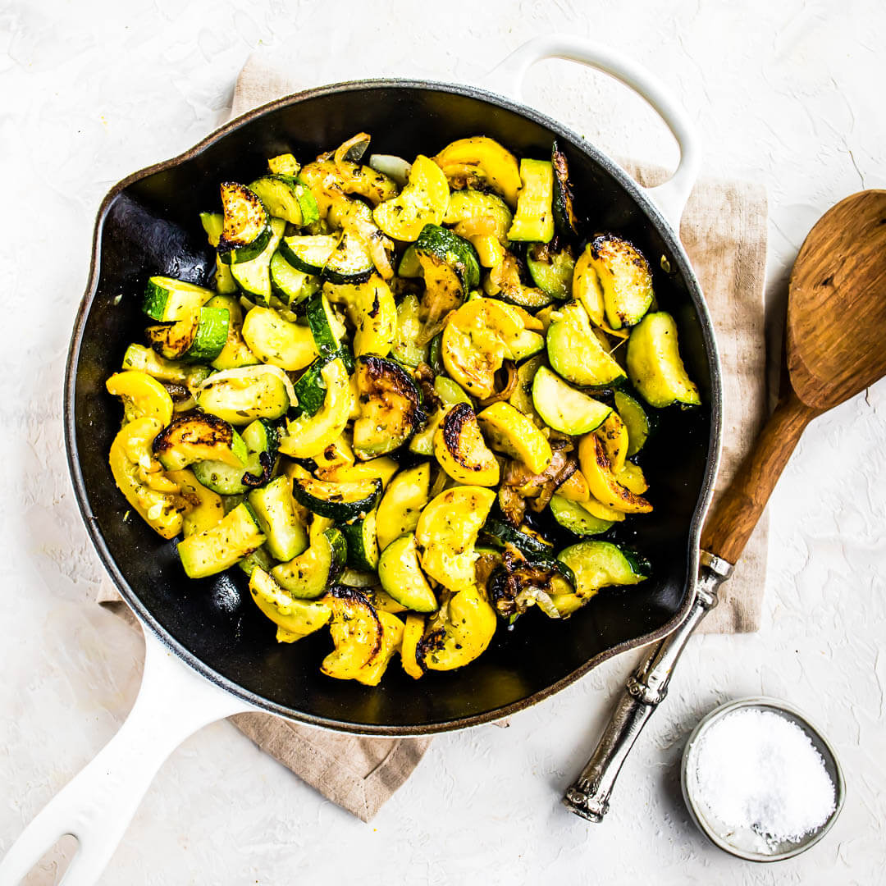

Back to home
Zuchini and Yellow Squash Side
Skillet zuchini and yellow squash from this recipe.

Description
Easy side to go with any main dish protein. Sautee in iron skillet if you have one, otherwise any saute pan will work.
Ingredients
- 0.5 tablespoon butter
- 0.5 tablespoon olive oil
- Two small zuchini, diced
- Two small yellow squash, diced
- Salt and pepper to taste
- Fresh grated parmesian cheese
Cooking Instructions
- Heat butter and olive oil in 10 or 12 inch skillet, over medium heat until hot and bubbling.
- Add zuchini and squash and sprinkle with salt and pepper
- Cook without stirring for 3 minutes until golden
- Stir, add more salt and pepper as needed
- Cook 5 to 7 more minutes, stirring as needed, until squash is brown and tender
- Top with parmesian and serve immediately